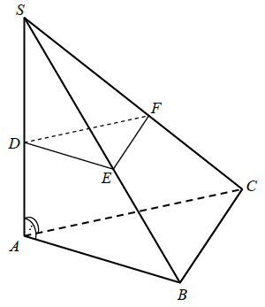
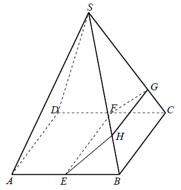

Jesteś tutaj: Matura
rozszerzona - kurs - część 45 - zadania
Matura rozszerzona - kurs - część 45 - zadania
Cały kurs na: ./matematyka-matura-rozszerzona-kurs.html.
Podstawą ostrosłupa \(ABCDS\) jest kwadrat \(ABCD\). Krawędź boczna \(SD\) jest
wysokością ostrosłupa, a jej długość jest dwa razy większa od długości krawędzi podstawy. Oblicz
sinus kąta między ścianami bocznymi \(ABS\) i \(CBS\) tego ostrosłupa.
\(\sin \alpha =\frac{2\sqrt{6}}{5}\)
Rozpatrujemy wszystkie stożki, których przekrojem osiowym jest trójkąt o obwodzie
\(20\). Oblicz wysokość i promień podstawy tego stożka, którego objętość jest największa. Oblicz
objętość tego stożka.
\(V=\frac{32\pi \sqrt{5}}{3}\)
Krawędź podstawy graniastosłupa prawidłowego trójkątnego \(ABCDEF\) (zobacz rysunek
obok) jest równa \(6\). Punkt \(K\) dzieli krawędź boczną \(CF\) w stosunku \(2:3\). Pole przekroju
tego graniastosłupa płaszczyzną przechodzącą przez krawędź podstawy \(AB\) i punkt \(K\) jest równe
\(15\sqrt{3}\). Oblicz objętość tego graniastosłupa. 
\(V=180\) lub \(V=270\)
Dany jest graniastosłup prawidłowy sześciokątny o krawędzi podstawy równej \(4\).
Graniastosłup przecięto płaszczyzną jak na rysunku. Otrzymano w ten sposób przekrój o polu równym
\(48\sqrt{2}\). Oblicz objętość danego graniastosłupa.
\(96\sqrt{15}\)
Dany jest ostrosłup trójkątny \(ABCS\), w którym krawędź boczna \(AS\) jest
jednocześnie wysokością ostrosłupa, a kąt między każdymi dwiema krawędziami bocznymi jest równy
\(60^\circ \). Przez punkt \(D\) leżący na krawędzi \(AS\) poprowadzono płaszczyznę równoległą do
płaszczyzny podstawy \(ABC\). Płaszczyzna ta przecięła krawędzie boczne \(BS\) i \(CS\) w punktach
\(E\) i \(F\) (zobacz rysunek). Pole trójkąta \(ABC\) jest równe \(P_1\), a pole trójkąta \(DEF\)
jest równe \(P_2\). Oblicz odległość między płaszczyznami \(ABC\) i \(DEF\). 
\(\frac{\sqrt{P_1}-\sqrt{P_2}}{\sqrt[4]{2}}\)
Punkt \(S\) jest wierzchołkiem ostrosłupa prawidłowego czworokątnego, a punkty
\(E\), \(F\) są odpowiednio środkami krawędzi \(AB\) i \(CD\) jego podstawy. Krawędź podstawy i
wysokość tego ostrosłupa mają taką samą długość równą \(1\). Płaszczyzna przechodząca przez punkty
\(E\) i \(F\) przecina krawędzie boczne odpowiednio w punktach \(G\) oraz \(H\) (zobacz rysunek).
Oblicz pole otrzymanego przekroju, wiedząc, że jest ono dwa razy większe od pola czworokąta
\(BCGH\). 
\(\frac{9\sqrt{5}}{50}\)
W ostrosłupie prawidłowym czworokątnym \(ABCDS\) o podstawie \(ABCD\) wysokość jest
równa \(5\), a kąt między sąsiednimi ścianami bocznymi ostrosłupa ma miarę \(120^\circ \). Oblicz
objętość tego ostrosłupa.
\(\frac{500}{3}\)